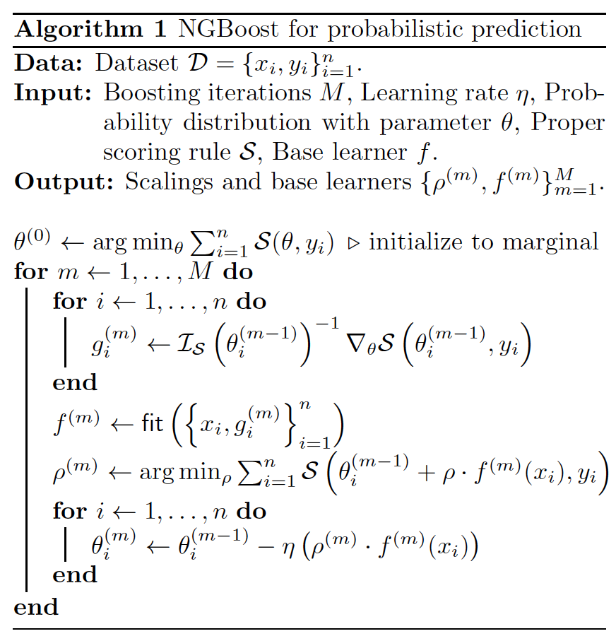

boosting系列之NGBoost算法详解
去年末看过NGBoost的论文，由于时间原因没有仔细的去了解，现在终于可以花点时间来补一下NGBoost，NGBoost是斯坦福的研究团队提出的一种梯度提升方法，解决概率预测中的问题，在现实中预测问题带有很多不确定性，比如天气的预测，顾客流失率，信用等等。传统的机器学习一般是一个点的估计，NGBoost则是对概率预测，可以得到概率分布的预测。
论文中通过模块化描述了NGBoost模型的整体结构，如下图所示.NGBoost通过自然梯度来实现拟合，其中模块主要包括基础学习器，参数的概率分布，评分规则这三大部分。

通过优化评分规则（例如最大似然估计（MLE）或更稳健的连续排名概率评分（CRPS）），对模型进行了训练，以使锐度(sharpness)最大化，并进行校准，最后会得到经过校准的估计。
自然梯度(Nature Gradient)
NGBoost是一种概率预测的监督性学习法，通过概率分布的形式将不确定行带入了梯度计算中，再以函数的形式来预测条件概率(\(P(y|x)\))分布的参数。
在标准预测中，目标对象是标量函数\(E[y|x]\)的估计，其中\(x\)是观察到的特征的向量，\(y\)是预测目标。 在NGBoost中，通过预测参数\(θ∈R\)来生成概率密度为\(P_θ(y|x)\)，\(\theta\)的概率预测， 相应的累积密度表示为\(F_\theta\)。
此处会有KL散度来定义预测分布P和真实分布Q之间的距离，通过KL散度来定义规则评分，因此最终的目标就是最小化这个规则评分S。在每次迭代中，参数的更新就会影响分布的更新，从而影响规则评分。因此参数的更新非常重要，即分布的移动和更新，论文中是通过自然梯度解决。
模块化
NGBoost主要通过基础学习器，参数概率分布和评分规则三大模块：
- 基础学习器为学习函数\(f\)，比如决策树
- 参数概率分布（\(P_\theta\)），如正太分布，多变量正太分布，拉普拉斯分布（开源代码中未实现），伯努利分布，指数分布等。
- 评分规则(\(S\))，如MLE，CRPS等
评分规则
评分规则对「预测的概率分布」和「目标分布」的进行对照观察，评分规则\(S\)将一个预测的概率分布\(P\)和一个观测值\(y\)（结果）作为输入，并给预测赋分\(S(P;y)\)。得出结果的真实分布可获得预期中的最佳分数。在目前的实现中支持MLE和CRPS，CRPS可以提供更加稳定的结果。
从上图中的模块化流程中可以看出，从输入X到Y，预测\(Y|X\)，是由条件分布\(P_\theta\)经过评分规则\(S\)产生的，其中\(\theta\)可以是一个值也可以是一个向量，它最终影响预测结果。
算法流程
整个算法流程比较简单，和一般的GBDT算法流程相同，整个算法需要提前确定概率分布，迭代次数，学习率，评分规则和基础学习器。在算法中有一个缩放因子，该缩放因子在每次迭代中都会进行更新。

从算法流程中可以看出模型是按序列学习的，每个阶段都有一组函数\(f\)和一个缩放因子\(\varphi\)。算法在开始时，首先会估计一个共同的初始分布\(\theta(0)\)，并通过训练使它能最小化评分规则\(S\)，在所有训练样本的影响了变量上的总和，在本质上就是拟合y的边际分布。
在每次迭代过程中，每批次的样本都会通过评分规则\(S\)，计算自然梯度\(g\)，再通过自然梯度在基学习器上进行投影(Projection)，基学习器上投影结果通过缩放因子进行梯度缩放，再引入学习率参数\(\eta\)等，来更新参数\(\theta\)：
训练过程源码解析
在官方开源的NGBoost源码中，对训练过程进行了详细的分析，目前的代码主要基于scikit-learn之上实现了NGBoost，目前实现了回归和分类(分类本身具有概率预测，因此一般都用于回归预测)。下面对源码关键部分进行注释，若要更详细了解可以参考官方开源代码：
def fit(self, X, Y, X_val=None, Y_val=None, sample_weight=None, val_sample_weight=None, train_loss_monitor=None,
val_loss_monitor=None, early_stopping_rounds=None):
"""
Fits an NGBoost model to the data
Parameters:
X : DataFrame object or List or numpy array of predictors (n x p) in Numeric format
Y : Type same as X. Should be floats for regression and integers from 0 to K-1 for K-class classification
X_val : DataFrame object or List or numpy array
Y_val : DataFrame object or List or numpy array
sample_weight : how much to weigh each example in the training set. (defaults to 1)
val_sample_weight : how much to weigh each example in the validation set. (defaults to 1)
train_loss_monitor : Defaults to the score defined in the NGBoost constructor
val_loss_monitor : Defaults to the score defined in the NGBoost constructor
early_stopping_rounds : the number of consecutive boosting iterations during which the loss has to increase before the algorithm stops early
Output:
A fit NGBRegressor object
"""
if Y is None:
raise ValueError("y cannot be None")
X, Y = check_X_y(X, Y, y_numeric=True)
loss_list = []
self.fit_init_params_to_marginal(Y) # 初始化分布的参数
params = self.pred_param(X) # 参数初始化，在该方法中将使用self.fit_init_params_to_marginal(Y)的初始化参数结果
# -------- 此处省略部分非核心代码 ----------------
for itr in range(self.n_estimators): # n_estimators为迭代次数和gbdt类似
# 首先对全量样本进行下采样, 默认为所有数据, 获得每次迭代的下采用数据, P_batch为该batch下的参数
_, col_idx, X_batch, Y_batch, weight_batch, P_batch = self.sample(
X, Y, sample_weight, params
)
self.col_idxs.append(col_idx)
D = self.Manifold(P_batch.T) # 获取参数分布,对应论文中的统计流形,通过Score规则和分布生成
loss_list += [train_loss_monitor(D, Y_batch, weight_batch)] # 记录评分(score),评分规则的输入为分布和目标Y
loss = loss_list[-1]
grads = D.grad(Y_batch, natural=self.natural_gradient) # 求梯度，自然梯度
proj_grad = self.fit_base(X_batch, grads, weight_batch) # 将自然梯度在base learner上projection
# 下面更新缩放因子,每次迭代都会更新一次缩放因子,缩放因子的更新会参考初始参数和梯度值
# line_search方法中有向上和向下缩放,根据初始分布和Y的评分结果选择更新策略
scale = self.line_search(proj_grad, P_batch, Y_batch, weight_batch)
# 开始更新分布的参数
params -= (
self.learning_rate
* scale
* np.array([m.predict(X[:, col_idx]) for m in self.base_models[-1]]).T
)
# -------------------- 省略非核心代码 -------------------------------
# 模型训练的停止条件,将自然梯度在基学习器上映射后的梯度值进行norm后计算均值
if np.linalg.norm(proj_grad, axis=1).mean() < self.tol:
if self.verbose:
print(f"== Quitting at iteration / GRAD {itr}")
break
self.evals_result = {}
metric = self.Score.__name__.upper()
self.evals_result["train"] = {metric: loss_list}
if X_val is not None and Y_val is not None:
self.evals_result["val"] = {metric: val_loss_list}
return self
NGBoost和其他boosting算法不同的是可以预测概率分布，因此可以使用pred_dist方法返回每个预测的概率分布。同时也支持predict接口，直接返回预测值。
上面训练过程中其中统计流形的定义也是非常重要的。定义是通过评分规则和参数的分布混合定义统计流形。流行包含了分布的所有参数，而且有fit和sample方法，通过Distribution实现；还有total_score和grad方法，通过Score实现。
def manifold(Score, Distribution):
"""
Mixes a scoring rule and a distribution together to create the resultant "Reimannian Manifold"
(thus the name of the function). The resulting object has all the parameters of the distribution
can be sliced and indexed like one, and carries the distributions `fit` and `sample` methods, but
it also carries the appropriate `total_score` and `grad` methods that are inherited through
distribution-specific inheritence of the relevant implementation of the scoring rule
"""
class Manifold(Distribution.implementation(Score), Distribution):
pass
return Manifold
class Score:
def total_score(self, Y, sample_weight=None):
return np.average(self.score(Y), weights=sample_weight)
def grad(self, Y, natural=True):
grad = self.d_score(Y)
if natural:
metric = self.metric()
grad = np.linalg.solve(metric, grad)
return grad
class Normal(RegressionDistn):
n_params = 2
scores = [NormalLogScore, NormalCRPScore]
def __init__(self, params):
super().__init__(params)
self.loc = params[0]
self.scale = np.exp(params[1])
self.var = self.scale ** 2
self.dist = dist(loc=self.loc, scale=self.scale)
def fit(Y):
m, s = sp.stats.norm.fit(Y)
return np.array([m, np.log(s)])
def sample(self, m):
return np.array([self.rvs() for i in range(m)])
def __getattr__(
self, name
): # gives us Normal.mean() required for RegressionDist.predict()
if name in dir(self.dist):
return getattr(self.dist, name)
return None
@property
def params(self):
return {"loc": self.loc, "scale": self.scale}
总结
- 从官方的测试结果来看，NGBoost和其他Boosting算法的预测效果不分上下，甚至效果更好。
- 效率上比其他模型差，目前的实现中使用了batch的模式。但是目前主要是通过python实现，核心部分并没有通过C/C++实现。
- 目前官方开源的代码还没有实现
early stop，基础学习器也支持较少。 - NGBoost的核心主要是自然梯度和评分规则的结合，并将自然梯度进行了一般化的简易实现。这部分也是很难理解的部分。
参考
1.https://medium.com/@benbenbang/ngboost-intro-and-comparisons-df72adf94096
2.论文地址NGBoost: Natural Gradient Boosting for Probabilistic Prediction
3.源码: https://github.com/stanfordmlgroup/ngboost
4.自然梯度：https://www.zhihu.com/question/21923317
5.NGBoost(自然梯度提升)：https://zhuanlan.zhihu.com/p/100271626
6.NGBoost论文研读：https://blog.csdn.net/weixin_44750583/article/details/103940140?utm_medium=distribute.pc_relevant.none-task-blog-BlogCommendFromMachineLearnPai2-2.nonecase&depth_1-utm_source=distribute.pc_relevant.none-task-blog-BlogCommendFromMachineLearnPai2-2.nonecase